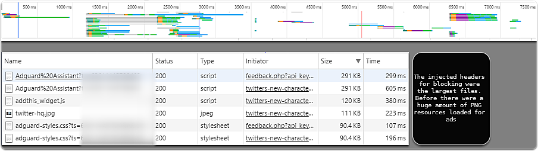

Ads...I know they employ people, make the world go round, gave us google.... but seriously I hate almost all ads.
If my ranking in google search drops to the end because of this post... well.... I'm ok with that.
Adguard
I've been using this for over a year as a beta tester (they provided license for me to test and use latest versions). I had a perfect case to demo the craziness of some sites with ads vs using Adguard the other day and figured I'd share it if you... like me... hate the clutter they provide on many sites. Now, note that other factors come into play here. For example, the site I hite should have been using some optimization for images presented. This site was pretty insane on the ad content, so others aren't as dramatic. I just saw this as a Google Now recommended article and checked it out.
Site With Ads
WITH NO ADBLOCKING 679 Requests 11.3 MB for a single webpage load Finish Time 1.1min

Site With Less Ads
WITH ADGUARD 116 Requests 2.2 MB for a single webpage load Finish Time 7.23sec This was loaded with the mobile emulator. If you are paying for data (for instance I'm on Project Fi), this could be a huge difference in your browsing bandwidth.

Side by Side
This blew my mind. According to Adguard metrics it had saved me over 2GB. Now, even taking this with a grain of salt, I was still pretty impressed by the results. I can immediately tell when I'm not running Adguard on android as the ads are everywhere. Adguard android has some additional functionality that provides the ability to create a local VPN and filter apps as well, so if you are using some app that has a annoying banner add right near the menu, this will most likely eliminate it. This is a pretty big image, and I blurred out text/ads to avoid any issues. Any guess at which one was the one with Adguard running?
Final Thoughts
There are options to allow some "acceptable" ads. Not interested in this personally, but those who are should know it's offered. Cost can be a little higher than some options due to yearly cost, but the reward of a constantly developing product seems worth it, especially for folks that browse a lot.
Only con I've come across with this is custom filtering options are a bit confusing for a non-technical user. Hopefully this will improve in the future to offer a much easier ad editing experience like some other similar toolkits. Lastly, a better notification of potentially blocking issues would be nice. I've come across a few sites that Adguard has blocked on various scripts or other "needed" actions that prevent the site from working. Disabling temporarily is acceptable for me, as this is quick with the chrome extension (pause for 30 secs). I'd say a better notification system, if even possible, on potentially site disrupting scripts/cookies blocked would be great enhancement. Overall, highly recommend this cross platform solution if you are looking for a better way to browse... with less ads!